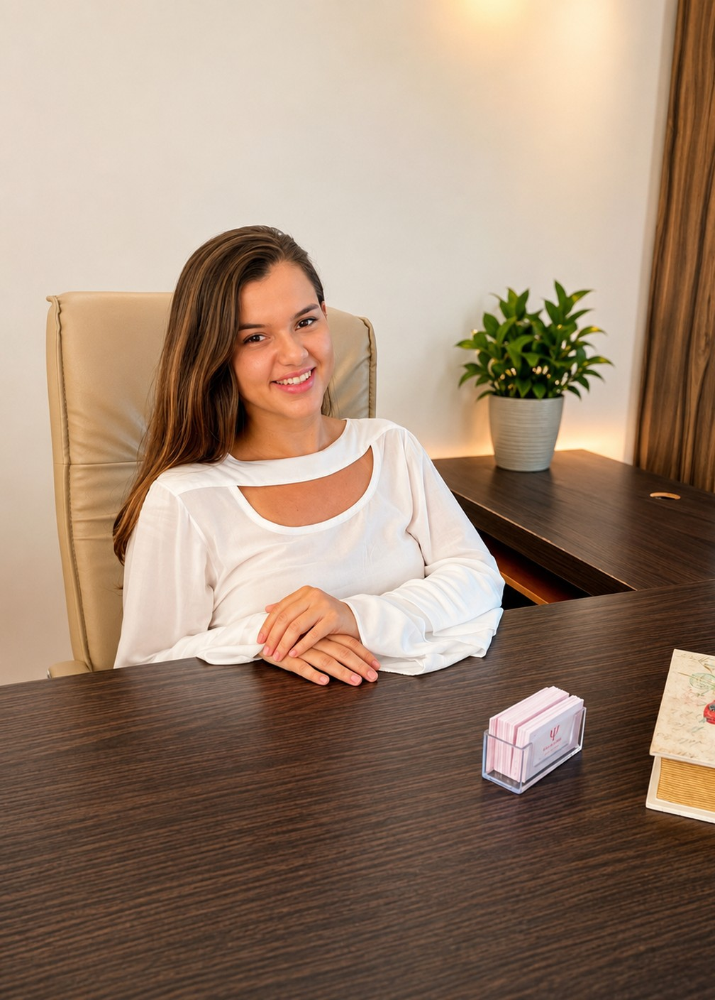
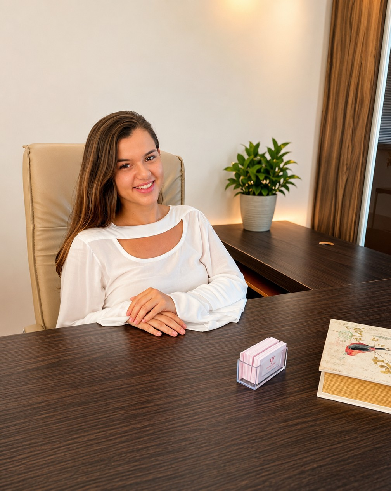
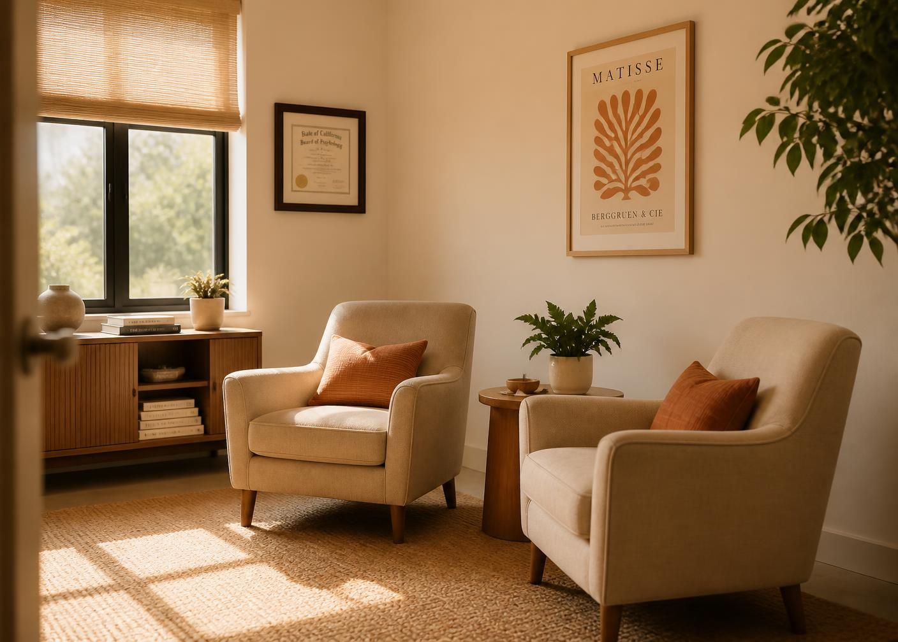

Psicologia • Cuiabá/MT
Um espaço para você se escutar, compreender e cuidar de si.
A psicoterapia pode ser um espaço de acolhimento, reflexão e autoconhecimento — com escuta profissional e olhar humano para a sua história.
Atendimento presencial e online

36 avaliações
Talvez você tenha chegado até aqui porque alguma coisa dentro de você está pedindo atenção.
“Tenho me sentido sobrecarregado(a).”
“Sinto que preciso entender melhor o que estou vivendo.”
“Quero tomar decisões com mais clareza.”
“Quero me conhecer melhor.”
“Preciso de um espaço onde possa falar sem julgamentos.”
Você não precisa ter todas as respostas para começar.
Conversar com a Fernanda
Sobre
Conheça a Fernanda
Sou Fernanda Petrilli, psicóloga formada pela UFMT, com pós-graduação em Orientação Profissional pela USP e formação em Psicanálise.
Meu trabalho parte da escuta cuidadosa e da construção de um espaço seguro para que cada pessoa possa olhar para sua própria história, compreender o que está vivendo e construir novos caminhos.
Escuta
Acolhimento e atenção à sua história.
Acolhimento
Um espaço respeitoso e sem julgamentos.
Profissionalismo
Formação e atuação profissional.
Formação
Psicóloga pela Universidade Federal de Mato Grosso
Pós-graduação em Orientação Profissional
Formação em Psicanálise
Psicoterapia
Um espaço onde você pode falar sobre o que realmente importa.
A psicoterapia oferece um espaço de escuta e reflexão para olhar com mais atenção para pensamentos, sentimentos, relações, escolhas e experiências que fazem parte da sua história.

Como funciona
Do primeiro contato ao seu espaço de escuta.
- 01
Primeiro contato
Você entra em contato pelo WhatsApp e conta brevemente o que está buscando.
- 02
Conversa inicial
Fernanda orienta você sobre o funcionamento dos atendimentos.
- 03
Início do processo
Caso faça sentido para você, vocês iniciam o acompanhamento psicológico.
- 04
Seu espaço de escuta
As sessões se tornam um espaço reservado para olhar para sua história e suas questões.
Atendimento online
Sua terapia também pode acontecer de onde você estiver.
Fernanda também realiza atendimentos online, oferecendo praticidade para quem prefere realizar as sessões à distância.
Avaliações
0 avaliações no Google
Gostei muito das consultas, conduta bastante profissional.
Galeria
Um pouco do ambiente e do trabalho.
Acompanhe a Fernanda no Instagram
Conteúdos sobre psicologia, escolhas, autoconhecimento e reflexões para o dia a dia.
Localização
Onde você pode me encontrar
R. Ten. Alcídes Duarte de Souza, 521
Duque de Caxias — Cuiabá/MT
Horários de atendimento
- Segunda a sexta
- 08:00 — 20:00
- Sábado
- 08:00 — 12:00
- Domingo
- Fechado
Talvez o primeiro passo seja simplesmente conversar.
Se você sente que gostaria de entender melhor o que está vivendo, entre em contato com a Fernanda.
Atendimento presencial em Cuiabá e online